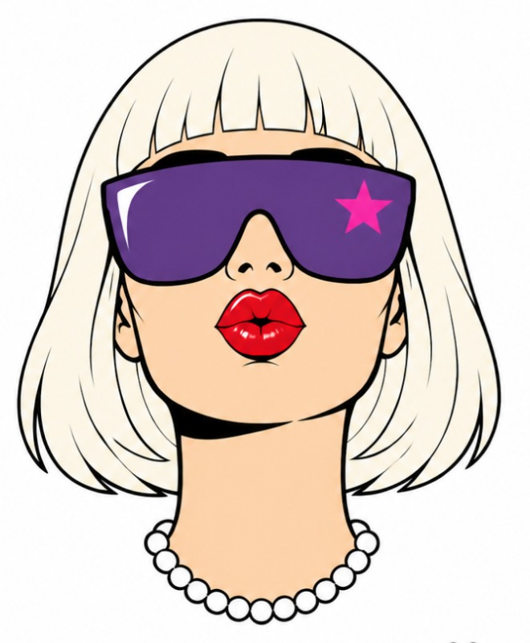

FÜR DIE NÄCHSTEN SIEBEN TAGE

WACHGEKÜSST
Der Nachmittag ist vorbei.
Deine Woche fängt gerade erst an.
JEDEN MORGEN · 2 MINUTEN
DEINE WOCHE
Eine pro Tag. Hak sie ab, schreib ins Notizbuch, was du bemerkst.
Einen Tag verpasst? Du kommst einfach zurück. Genau das haben wir geübt.
NÄCHSTER NACHMITTAG
Ein Nachmittag im Monat, jedes Mal eine Stufe in der Tiefe, zum Beispiel der Brief an dich selbst oder dein persönlicher Anker. Wer einmal da war, kann eine Einladung bekommen. Sprich mich einfach an.
Wachgeküsst ist ein Coachingangebot und ersetzt keine ärztliche oder psychotherapeutische Behandlung. Alle Übungen sind freiwillig. Wenn starke Gefühle oder alte Erinnerungen hochkommen, wende dich bitte an eine Ärztin oder Psychotherapeutin.
Kontakt: [NICOLE NACHNAME, ANSCHRIFT, MAIL]